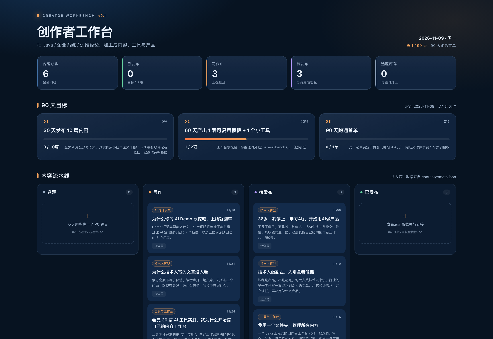

工具测评解决的是“要不要用”。
内容工作台解决的是“怎么持续产出”。
我翻了一下自己的公众号后台：已经发了 30 次，近期单篇阅读大概在 1 到 197 之间，内容大多是 AI 工具实测——爬虫框架、Agent 浏览器、Claude 工作区、网页抓取、视频生成、桌面自动化。
这些文章帮读者判断一个工具值不值得用。
但翻完这 30 篇内容，我发现它们回答不了我自己的一个问题：
为什么我测的工具越来越多，自己的内容生产却越来越乱？
一个 AI 工具再好，解决的通常是一个单点问题：
但内容生产不是单点，它是一条线：
选题 → 素材 → 写作 → 配图 → 发布 → 复盘。
如果每个环节都用不同工具，工具之间没有统一的文件、状态和流程，你只是把“手工操作”换成了“在更多工具之间切换”。
最后，工具越多，切换成本越高，断更越容易。
这也是为什么很多人收藏了几百个工具，却连一篇完整的内容都发不出来。不是不努力，是每换一个工具，就多一次重新开始。
第一，工具更新太快，追不完。今天刚测完一个框架，下周又冒出三个替代品。把时间全花在追新工具上，永远没有尽头。
第二，读者记住的不是工具名，而是结果。“某工具 2.2 秒启动”会过时，“我用它省下了每天一小时”不会。
这也是为什么单独写一个工具的参数，很难沉淀成长久内容；但如果写“这个工具如何改变一条工作流”，它就能被反复引用。
第三，内容本身也需要生产线。选题、素材、结构、配图、发布和复盘，任何一个环节没有流程，写得多只会更乱。
所以问题不是“再测一个什么工具”，而是“怎么把测过的东西，变成可持续的内容资产”。
工具测评是点，内容工作台是线。点再多，不连成线，也只是一地珠子。
想明白这件事之后，我停止继续找工具，开始问自己三个问题：
这三个问题，任何单个工具都回答不了。
“存在哪里”决定你会不会丢东西；“现在什么状态”决定你每天打开电脑知道该做什么；“下一步做什么”决定你会不会又开一个新坑。
能回答它们的，只能是一套工作台：一个统一的目录、一套固定的状态、一条从输入到输出的流程。
所以我用最土的办法，给自己搭了一个创作者工作台 v0.1。
它不高级，也不完美，但它能回答那三个问题：东西在哪、现在什么状态、下一步做什么。
我试过笔记软件、在线文档、选题工具、数据看板。问题不是它们不好，而是每个工具都只覆盖一段。
文件夹的好处很朴素：
工具会过时，文件不会。
这不是说 SaaS 不好。团队协作、多人编辑、云端同步，SaaS 有它的价值。但对一个刚起步的个人创作者来说，最重要的不是功能多，而是这套东西五年后还在、还能被自己和 AI 读懂。
工作台分成四块：
creater/
├── workbench/ # 定位、选题、模板、看板、工具
├── content/ # 每一篇内容一个独立项目
├── reviews/ # 独立审稿
└── .baoyu-skills/ # 发布与配图配置每一篇内容都长这样：
content/2026-11-09-stop-learning-ai/
├── article.md
├── meta.json
├── imgs/
├── prompts/
└── wechat-preview.html内容、状态、图片、发布信息都在一个文件夹里，不需要满电脑找“最终版”。状态只有四种：选题、写作、待发布、已发布。
工作台里还有：
四个动作也很简单：
先说“选”。选题库里 39 个题目只是库存，真正要做的是用选题卡打分：读者是谁、痛点是什么、我的独特素材是什么、能不能拆成多种形式。低于 12 分，就换题。
再说“写”。公众号模板规定的是结构，不是文风。先写完，再回头改；初稿的目标不是完美，是存在。
meta.json 和发布记录。四个动作走一遍，一篇内容就有了完整生命周期，不再靠灵感，也不再靠“今天想不想写”。

这套工作台没有让我少看工具，反而让我更清楚为什么要看。
以前看工具，是为了写一篇测评；现在看工具，是为了回答一个问题：这个工具能不能让我的生产线快一点？
如果不能，就不看。
如果某个工具真的能解决一个环节的问题，我会把它写进工作台：选题阶段用什么、写作阶段用什么、配图和排版用什么、发布和复盘用什么。
工具不再是收藏品，而是生产线上的零件。
比如我看一个爬虫工具，以前只关心“安装、跑通、速度”；现在会多问一句：它能不能接进我的素材采集流程？如果能，我就把它记进工作台的“素材来源”里，而不是只看完就结束。
误区一：先买工具，再想流程。
工具是最后一步。先想清楚你的内容从哪里来、经过哪几步、以什么状态结束，再决定要不要工具。
误区二：把工作台当收藏夹。
工作台不是知识库。知识库可以无限收藏，工作台只放能推动发布的东西。每一份素材、每一个模板，都应该回答：它帮我把哪一步往前推了？
误区三：一开始就追求自动化。
自动化很诱人，但在流程没跑通之前，自动化只会把混乱放大。先手动跑通 10 篇，再考虑哪些环节值得自动化。
这 10 篇不用篇篇完美，但它们必须走完同一个流程。流程跑顺了，工具才有意义；流程没跑顺，再多工具也只是摆设。
如果你也收藏了很多 AI 工具、也看了很多测评，却觉得自己的内容生产越来越乱，我的建议是：
先别买第 31 个工具。
先做三件事：
meta.json 记下状态。你会很快发现，自己缺的不是工具，而是一条能重复运转的流程。
工作台不是一天搭完的，它是在使用中长出来的。先有一个能跑的版本，再让它每天变好一点点。
不用等所有工具都试完，也不用等模板完美。你需要的不是更多准备，而是让第一篇内容走完一次完整流程。
如果你不知道从哪开始，就做这个 7 天实验：第 1 天建三个文件夹，第 2 天选一个题目，第 3–4 天写 1500 字，第 5 天配图和排版，第 6 天发出去，第 7 天复盘。
7 天后你会发现，真正让你卡住的，通常不是工具不够，而是选题不清、结构不稳、发布前没人检查。这些问题，工作台都能提前帮你暴露。
如果你已经写了很多工具测评，不妨问自己：这些测评最后留下了什么？如果只是文章列表，那太可惜了。它们本可以变成你的选题库、素材库、工具库和读者信任。工作台做的，就是把这些零散的资产接起来。
工具是手段，作品才是答案。先把第一篇发出去，比什么都重要。
如果也想要一个起点，我把自己在用的工作台整理成了一份空白模板。后台回复「工作台」可以领取，v0.1 还在内部测试，想找 10 位真实使用的人。
如果你也在做内容，欢迎从今天开始，先建一个文件夹。不用等准备好，开始比准备重要。你会发现，很多问题只有在动手之后才有答案。
工具会变，作品会留下。希望下一个 30 篇，我们都能留下真正的作品。共勉。